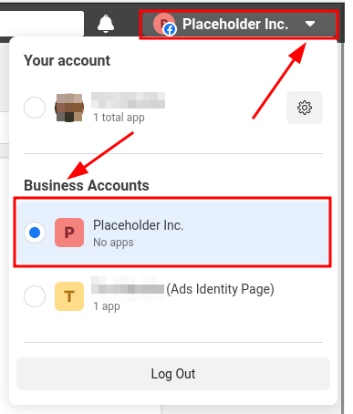
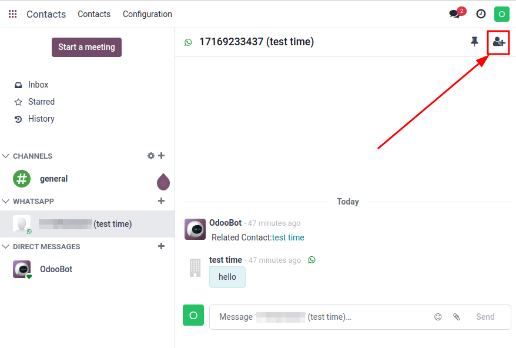
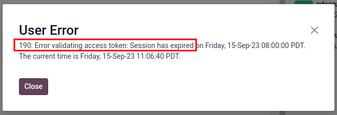
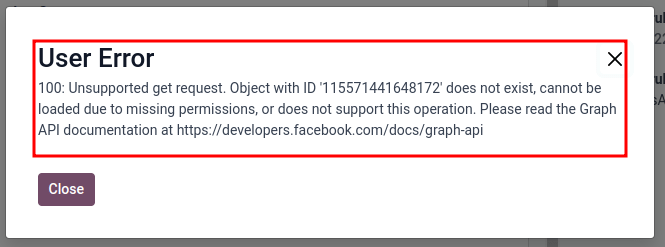

WhatsApp¶
WhatsApp is an instant messaging and voice-over-IP app that allows users to send messages, make calls, and share content. Businesses can use WhatsApp Business to communicate with their customers by text, send documents and provide support.
With the Odoo WhatsApp app, a company can connect a WhatsApp Business Account (WABA) to an Odoo database, which allows for the following:
Receive and reply to WhatsApp messages directly from an Odoo database
Create new templates with dynamic placeholders/variables
Send pre-approved templates that use dynamic variables, such as:
Quotations from the Sales app
Receipts and invoices from the Point of Sale app
Tickets from the Events app
参考
WhatsApp is a messaging service operated by Meta, which is the parent company of Facebook. WhatsApp is commonly used as a communication tool in many countries and by many businesses. This documentation will cover the integration of a WhatsApp Business Account with Odoo. The company's Meta account is configured in Odoo via an API connection.
The WhatsApp connector supports two flows: company initiated, and customer initiated. A company can initiate a discussion by sending a template to one or more people. Once the template is sent, the recipient can answer in order to trigger a discussion between the sender and the receiver (a Discuss chat window will pop up if the customer answers within 15 days).
If the discussion is initiated by the client (e.g. by sending to the company's public WhatsApp number), then Odoo will open a group chat with all operators responsible for this WhatsApp channel.
ちなみに
It is recommended to set up multiple WhatsApp accounts for different departments. For example, the help desk team and sales teams can chat on different channels.
WhatsApp configuration in a Meta¶
A WhatsApp integration with Odoo uses a standard API connection, and is configured on Meta in the following steps:
Create a Meta business account
Create a Meta developer account
Setup an app and WhatsApp product on Meta's developer console
Test the API connection.
Once connected, messages are then sent and received through Odoo's Discuss application using the WhatsApp API.
Meta business account setup¶
To create a Business account with Meta (owner of Facebook) navigate to: Facebook Business Manager. Begin by clicking Create account and then enter the business name, the administrator's name, and a work email address. Then click Next, and a pop-up window will appear prompting to confirm the email address. After confirming, click Done to close the window.
Next, follow the instructions in the email sent by Facebook to confirm the creation of the business account and to complete the setup process.
重要
If the business account is linked to a personal Facebook account then the administrator must toggle between the personal account to the business account for the remainder of the configuration.
To toggle to the business account navigate to the Facebook Developer Console and click on the account name in the upper right corner. Under the Business Accounts heading, click on the desired business that the WhatsApp configuration should take place in. This will be the account for which Odoo will send and receive WhatsApp messages.
重要
In order to create a Meta business account, the user must already have a personal Facebook account that has existed for a minimum of one hour prior to setting up the Facebook Business account. Trying to create the business account prior to this time will result in an error.
App creation¶
On the Meta for Developers dashboard, sign in with the Meta developer account. If no account is configured yet, link a Facebook account to create a Meta developer account.
注釈
A Facebook developer account is different than a Facebook business account. While developer accounts are made up of personal Facebook accounts, business accounts are not as they represent a business and manage all of the business's assets in Meta, such as apps.
Click on My Apps in the top right corner after successfully signing in to the Meta developer account. This will redirect the administrator to all the apps the developer has configured in this specific developer account. Click on Create App to begin the process of configuring a new Meta application.
App type¶
On the page, select Other under the section labeled, Looking for something else?, and then click Next to be directed to another page in order to select the app type. Then, click on the first option listed under the Select an app type label, titled Business. This selection allows for the creation and management of the WhatsApp API.
Now, click Next to configure the app, as desired. When the app type has been configured, the administrator will move onto the app details section.
App details¶
On the Details section of the Create an app process, enter Odoo in the
field under the Add an app name label.
注釈
The app name can be changed at a later time in the settings, if necessary.
警告
Trademarks and branded elements may not be used in this text section. These include the Meta
group of companies. Do not include the word: WhatsApp or the system will flag this in error.
Next, enter the developer email address in the field under the App contact email label.
Lastly, set the Business Account - Optional field to the Meta business account profile, using the drop-down menu. To finish, click Create app. This action will create the app and prompts the Meta Platform Terms and Developer Policies agreements.
To accept the agreements, enter the Facebook password for security purposes, and click Submit to finalize the app creation. The browser will then direct to the Meta for Developers dashboard.
注釈
If the Meta business account is prohibited from advertising, claiming an app won't be allowed. To resolve this issue navigate to https://business.facebook.com/business for assistance.
For more information, see Meta's documentation on advertising restrictions.
Add a WhatsApp product to the app¶
Now that the basic structure of the app has been created, a product will need to be added to the app. Begin by accessing the Meta app dashboard by navigating to https://developers.facebook.com/apps, and clicking on the app that is being configured.
On the next page: since WhatsApp will be used, click Set up next to the box containing WhatsApp, located towards the bottom of the page.
The page then directs to the configuration page for the WhatsApp Business Platform API. Use the drop-down menu to select the Meta business to be configured for the Select a Meta Business Account option, and then click Continue to confirm the selection.
注釈
When Continue is clicked, the administrator agrees to Meta's terms and conditions as linked on the Meta App Dashboard.
注釈
Once the WhatsApp product is added to the app, Meta will provide a WhatsApp test phone number with 5 test messages.
Start using the WhatsApp API¶
After finishing the previous WhatsApp product wizard, and clicking Continue, the browser should have directed to the WhatsApp Quickstart page; this Quickstart page is where to begin configuring the WhatsApp API by adding a phone number and then sending an initial test message.

注釈
If the browser isn't on the Quickstart page for WhatsApp, navigate to
https://developers.facebook.com/apps and click on the app that is being configured, (the
app name is Odoo if the instructions above were followed).
Then, in the menu on the left-hand side of the page, click the v (menu toggle) icon next to the WhatsApp section heading. A small menu will open, containing the following options:
Quickstart
API Setup
Configuration
Click the Quickstart option, and then click Start using the API.
API Setup¶
After clicking on Start using the API, the page navigates to the API Setup. Now that the test number has been created, a test message can be sent to confirm that WhatsApp is working properly. To begin, navigate to the section on the page labeled Send and receive messages and click the drop-down menu next to To, under Step 1 Select phone numbers.
Now, select the only option available: Manage phone number list. Follow the steps and add up to five numbers to send the free test messages to. After entering the appropriate country code and phone number, click on Next.
重要
Adding a phone number to send to in this step will allow for a successful test to be sent by the terminal. This is critical to ensure the WhatsApp API is working.
A verification code from WhatsApp Business is then sent to the phone number, which needs to be input on the next screen to verify ownership of the number. Enter the verification code and click Next to verify the number.
Send a test message via terminal¶
Next, send a test message via the terminal. Under the section labeled Step 2 Send messages with the API, click Send Message. A test message will then be sent to the phone number that was set in the previous section.
Upon successfully receiving the message to the number, move onto the next section to produce and configure webhooks.
WhatsApp configuration in Odoo¶
The next steps configured in this section are all within the Odoo database. A few different values for a token, phone number, and account IDs all need to be configured in Odoo; these values are necessary in order to create a Callback URL and Webhook Verify Token, which are then used to configure the webhooks (in order to receive messages back into the database).
In Odoo, navigate to . Then click New to configure the WhatsApp business account in Odoo.
In another browser tab, navigate to , and then copy the following values from the Meta developer console into the corresponding fields in Odoo:
Name |
Meta Console |
Odoo Interface |
|---|---|---|
Phone |
Phone number ID |
Phone Number ID |
Token |
Temporary access token |
Access Token |
App ID |
App ID |
App ID |
Account ID |
WhatsApp Business Account ID |
Account ID |
To retrieve the App Secret, navigate to the Meta developer console, https://developers.facebook.com/apps and select the app that Odoo is being configured in. Then in the left-side menu, under App settings, select Basic.
Next, click Show next to the field App secret, and enter the account password to verify ownership. Copy the App secret and then paste that copied value into the App Secret field on the Odoo WhatsApp Business Account configuration dashboard.
To complete the setup of the WhatsApp business account in Odoo, click Test Connection. A successful message in green will populate in the upper-right corner of the dashboard if the configuration is set correctly.
Configuring webhooks¶
To configure the webhooks for WhatsApp in Odoo, navigate to https://developers.facebook.com/apps and select the app that Odoo is being configured in. Next under the WhatsApp menu heading on the left side of the screen, click on the API Setup menu item. Finally go to the section marked Step 3: Configure webhooks to receive messages and click on Configure webhooks.
ちなみに
Another way to configure Webhooks is to navigate to https://developers.facebook.com/apps and select the app that Odoo is being configured in. Then select Webhooks in the left hand menu.
On the page, click on Edit, where both the Callback URL and Webhook Verify Token values from the Odoo will be added.
注釈
Both the Callback URL and Webhook Verify Token values were automatically populated after clicking on Test Connection in the previous step.
In a separate browser window, retrieve the necessary values in Odoo by navigating to and select the account that is being configured. Locate the values under the section labeled Receiving Messages.
Copy and paste the Callback URL from Odoo into the Callback URL field in Meta. Similarly, copy and paste the Webhook Verify Token into the Verify Token field on the Meta developer console, as well.
Finally, click Verify and save to record the values in the Meta developer console.
Webhook fields¶
Now input individual webhook fields into Meta's developer console, under the Webhook fields section. Click Manage and when the pop-up window appears, check the boxes in the Subscribe column for the following field names:
account_update
message_template_quality_update
message_template_status_update
messages
template_category_update
After making the selections, click Done.
The finished Webhooks configuration will appear like this in the Meta developer console:

重要
The Webhook fields will only appear once the subscription is confirmed using the Callback URL and Webhook Verify Token.
Add phone number¶
To configure the phone number to use for WhatsApp in Odoo, navigate back to the Meta developer console (https://developers.facebook.com/apps) and again select the app that Odoo is being configured in. Under the WhatsApp menu heading on the left side of the screen, click on the API Setup menu item. From there, go to the section marked: Step 5: Add a phone number, and click on Add phone number.
In the fields, enter a Business name as well as a Business website or profile page.
ちなみに
The Business website or profile page field can be a social media page's URL.
Complete filling out the business information by next selecting the country that the company does business in from the drop-down menu in the Country section. Add an address if desired, however, this information is optional. After adding the location, click Next to continue.
The following page contains information for the WhatsApp Business profile. Complete the following sections, accordingly:
WhatsApp Business Profile Display Name
Timezone
Category
Business description (optional)
Once these sections are complete, click Next. The page refreshes and then prompts the administrator to Add a phone number for WhatsApp in the respective field. Here, enter the phone number to configure in WhatsApp.
Next, choose a verification method for the phone number. Select either Text message or Phone call, and then click Next proceed.
The phone number entered will receive either a text or a phone call by WhatsApp with a code, depending on the verification method chosen. Enter that verification code into the Verification code field and click Next to finish.
警告
If a payment method hasn't been added this will be necessary to proceed. Visit Meta's documentation on how to add a payment method in Meta's Business Manager. This is part of Meta's fraud detection system, in order to ensure that the account/company are real a payment method is required to proceed.
Permanent token¶
After configuration and testing are complete, a permanent token should be created to replace the Temporary token.
Begin by navigating to https://business.facebook.com/ and then go to . Select an existing system user or create a new system user by clicking on Add.
Assets now must be added to the system user and then a permanent token can be generated.
Click on Add assets, and when the pop-up window appears select Apps under the Select asset type. Then, select the Odoo app and toggle the permissions to On under the Full control option. Set this new permission setting by clicking Save Changes, to which a confirmation window will appear, acknowledging the addition of the asset to the system user. Finish by clicking Done.
Next, the permanent token will be generated. Click on Generate new token, and a pop-up window will appear asking which app this token should be generated for. Select the App that this token is for. Then determine the expiration date of either 60 days or Never.
Finally, when Meta asks which permissions should the system user allow, add all of the following permissions:
WhatsApp_business_messaging
WhatsApp_business_management
When permissions are set, click Generate token. Copy the token value that populates on the screen that follows.
With that token value, update the Access Token field in the WhatsApp business account in Odoo by navigating to .
Go live with the Meta app¶
Finally, to launch the app, the Meta app must be set to Live in the Meta developer console. Navigate to https://developers.facebook.com/apps and click on the app that is being configured. In the top menu, toggle the App Mode field from Development to Live.
重要
If the app status is not set to live, then the database will only be able to contact the test numbers specified in the developer console.
警告
A privacy policy URL must be set in order for the app to be set to live. Go to the Meta developer console, https://developers.facebook.com/apps and select the app that Odoo is being configured in. Then, using the menu on the left side of the screen, go to . Then, enter the privacy policy hyperlink address under the Privacy Policy URL field of the form. Click Save changes to apply the privacy policy to the app.
Once the app has gone live in the Meta developer console, a confirmation email is sent to the administrator.
WhatsApp templates¶
WhatsApp templates are saved messages that are used repeatedly to send messages from the database. They allow users to send quality communications, without having to compose the same text repeatedly.
Creating different templates that are tailored to specific situations lets users choose the right message for the right audience. This increases the quality of the message and the overall engagement rate with the customer.
WhatsApp templates can be created on both the Odoo and Meta consoles. The following process will overview the process for creating templates in Odoo and then afterward in Meta.
重要
WhatsApp has an approval process that must be completed before the template can be used. Meta template approval.
Creating templates in Odoo¶
To access and create WhatsApp templates, begin by navigating to the dashboard.
At the bottom of an individual template's form, there are three tabs: Body, Buttons, and Variables; these three tabs combined create the WhatsApp template.
The text is entered into the Body tab, and dynamic content that is called out in the Body tab is specified in the Variables tab. Every piece of dynamic content (e.g., placeholders) in the message (body) is specifically called out and specified in the Variables tab.
Templates are prefabricated layouts that allow users to send professional looking messages to customers. These templates are capable of containing dynamic data that will populate in the end message using variables that are set in the template configuration. For example, messages can contain the end user's name, call out specific products, or reference a sales order, to name a few convenient and impactful variables.
To create a WhatsApp template, go to the dashboard and click New. On the form, enter a Name for the template, and select a Language.
重要
In order to complete this next task, administrator access rights are needed to edit the Applies to field. See this access rights documentation for more information.
In the Account drop-down menu, select the WhatsApp business account in Odoo that this template should link to. Next, under the Applies to field select the model the server action will apply to for this template.
ちなみに
These models can also be accessed in developer mode. On a contact form (or similar relevant form in Odoo), navigate to the model that will be referenced, and hover over any field name. A box of backend information will reveal itself with the specific Odoo Model name in the backend. Search (using the front-end name) for this model in the Applies to drop-down menu in the WhatsApp template.
警告
Often when changing the model or Applies to field, the Phone Field may
produce an error The Phone Field should always be set to the Phone or Mobile
model.
To search available fields, type in the front-end name in the Search... box. This will find a result from all of the available fields for the model (Applies to) that the template is created for.
注釈
In order to find specific fields, multiple levels may need to be navigated in the search results box. Use the > (right chevron) and ⬅️ (left arrow) icons to navigate between the menu levels.

Change the Category to fit either a Marketing, Utility, or Authentication category. In most instances the first two options will be used, unless the user would like to send a password reset or something security related. Set to Marketing should there be anything promotional being sent and set to Utility should there be general transactional messages being sent (i.e., sales order, event ticket, etc).
重要
Specifying an incorrect category can cause a flag/rejected status from Meta during the approval process.
Add any Users that are allowed to use this template. In the right-side column, a Header type can be configured along with a Header message, as well.
The available Header types are as follows:
Text
Image
Video
Document
Location (variables need to be set)
Navigate to the Body tab to configure the main message of the template.
When all the necessary changes are made to the template, click on the Submit for approval button in the upper-left corner. This will cause the status of the template to change to Pending.
The status will remain in Pending until a decision has been made by Meta, whereby a confirmation email will then be sent indicating that the template has been approved (or rejected). The templates will then need to be synced from the Odoo database.
See this section for more information on syncing templates.
ちなみに
There are pre-configured demo data templates available in Odoo to use or modify. These templates can be used as-is or modified to suit a specific business need.
To use these templates, navigate to and select a pre-configured template. Click Submit for Approval to start the approval process. An email will be sent to the administrator of the Meta account when the template has been approved.
Using placeholders and variables¶
Dynamic variables reference certain fields within the Odoo database to produce unique data in the WhatsApp message when using a template. Dynamic variables are encoded to display fields from within the database, referencing fields from within a model.
Example
Many companies like to customize their WhatsApp messages with a personalized piece of customer information to grab attention. This can be accomplished in Odoo by referencing a field within a model by setting a dynamic variable. For example, a customer's name can be referenced in the email from the Customer field on the Sales Order model.

Dynamic variables can be added in to the Body by adding placeholders in the
text. To add a placeholder in the message body enter the following text {{1}}. For the second
placeholder enter {{2}} and increase incrementally as more placeholders are added to the text.
Example
The following is the text from payment receipt template body:
Dear {{1}},
Thank you
These placeholders must be configured on the Variables tab of the template before submitting for approval from Meta. To edit the dynamic variables on a template, first change the Type to Field of Model. This allows Odoo to reference a field within a model to produce unique data in the message being sent.
Next, edit the Field of the dynamic variables. The Applies to field in the template should be edited prior to ensure the correct model and field are referenced.
To search the available fields, type in the front-end name of the field in the search box. This will find a result from all of the available fields for the model (Applies to) that the template is created for. There may be multiple levels that need to be configured.
Example
The following is an example of the variables set for the above placeholders in the payment receipt noted above:
Name |
Sample Value |
Type |
Field |
|---|---|---|---|
body - {{1}} |
Azure Interior |
Field of Model |
|
body - {{2}} |
INV/2022/00001 |
Field of Model |
|
body - {{3}} |
My Company |
Field of Model |
|
body - {{4}} |
$ |
Field of Model |
|
body - {{5}} |
4000 |
Field of Model |
|
body - {{6}} |
https://.. |
Portal link |
Example
For example, in the Body tab, if the following is typed, "Hello {{1}},", then {{1}}
must be set in the Variables tab. For this specific case, the message should greet
the customer by name, so the {{1}} should be configured to populate the {{1}}
Field with the Customer name.
警告
Customizing WhatsApp templates is out of the scope of Odoo Support.
Meta template approval¶
After updating the dynamic variables on the template, the template needs to be submitted to Meta for approval again. Click Submit for Approval to start the approval process. An email will be sent to the administrator of the Meta account when the template has been approved.
Following the approval from Meta, sync the templates again in the Odoo database. See this documentation: Syncing templates.
ちなみに
To see the status to Meta's WhatsApp template dashboard by navigating to https://business.facebook.com/wa/manage/home. Then go to .
Syncing templates¶
Templates must be synced on the Odoo database once they are approved by the Meta team. To do so, begin by navigating to and select the configuration that should be synced. Under the section marked , towards the bottom, click on Sync Templates. Meta will update the templates that are approved so that they can be utilized with various apps in the database.

A successful message in green appears in the upper-right corner with the number of templates updated.
ちなみに
Templates can also be synced individually from the template itself. Navigate to the dashboard and select the template to sync. Then, click on the Sync Template button located in the top menu of the template's form.
Creating templates in Meta¶
First, navigate to Meta's WhatsApp template dashboard, and then go to .

To create a WhatsApp template, click on the blue Create template button, and then select the Category. The options listed include: Marketing, Utility, and Authentication. In most instances the first two options will be used, unless the user would like to send a password reset or something security related.
Enter the Name of the template and then select the Language for the template.
注釈
Multiple languages can be selected by typing the language name(s) and selecting the other languages as needed.
After making the appropriate selections, click on Continue in the upper-right corner. The page redirects to the Edit template page. Here the Header, Body, Footer and Buttons are configured. To the right of the template is a preview of what the template will look like in production.

When all the necessary changes are made to the template, click on the Submit button in the upper-right corner. A confirmation window appears to confirm the language— click Confirm to approve and then another window appears stating that the template will be submitted to Meta for review and approval.
The Status of the template will remain in In review until a decision has been made by Meta. Once an email confirmation is received approving the template, the templates will need to be synced from within the Odoo database.
参考
For more information on configuring templates on the Meta developer console visit Meta's WhatsApp template documentation.
Notifications¶
Notifications in WhatsApp are handled similar to a message conversation in Odoo. A pop-up window appears with the received conversation from the customer. By default, notifications are set in the WhatsApp business account configuration in Odoo.
Notification settings can be adjusted by navigating to . From there, select the account and scroll down to the section where notifications are handled. Under the Notify users heading, type in the field which user(s) should be notified for this particular WhatsApp channel.
注釈
Once a conversation is initiated between a user and a customer, notifications to all the users specified in the WhatsApp business account configuration won't occur. Only notifications to the user(s) in the conversation will occur. Should the user not respond within 15 days, the customer's reply after the 15 days will populate once again to all the users specified in the WhatsApp configuration.
Adding users to chat¶
Users can be added to a WhatsApp chat by expanding the WhatsApp pop-up window. WhatsApp conversations are located in the Discuss app. Click on the 👤+ (add user) icon next to it, and a window appears to invite users to the conversation.
WhatsApp API FAQ¶
Verification¶
As of February 1, 2023, if the Meta app requires advanced level access to permissions, a complete business verification may need to be completed. This includes submitting office business documents to Meta. See this documentation.
Template errors¶
Editing templates can cause tracebacks and errors unless the exact process is followed above, here: (WhatsApp templates).
Duplicate validation error¶
When syncing the templates there may be an instance when there are multiple templates with the same name on Meta's business manager and in Odoo. This causes a duplicate validation error. To correct this issue, rename the duplicate template name on Odoo and sync the templates once again by following the steps here: Syncing templates.

Token errors¶
User error¶
Should the temporary token not be replaced with a permanent token a user error will populate in Odoo when testing the connection after sending fails. To correct this issues see Permanent token.
System user error 100¶
Should the system user be an Employee when setting up the permanent token, a user error 100 will populate.
To correct this error, create an Admin system user, following the process outlined here: Permanent token.
